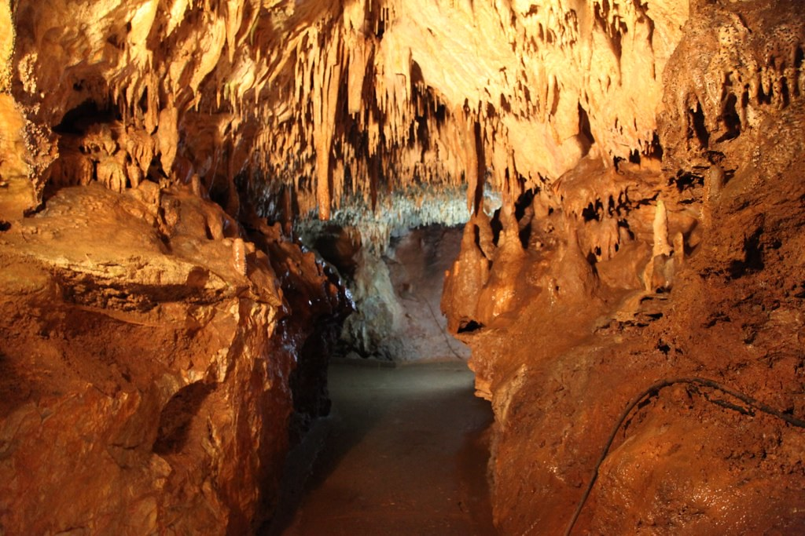
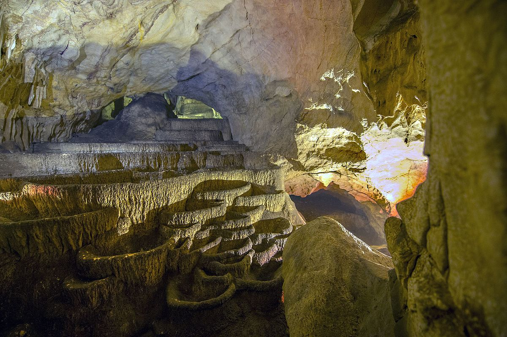

1 / 5

Malet e Rugoves
Rugova është trevë malore në Veri-Perëndim të qytetit të Pejës, në Kosovë. Është regjioni i tretë i Bjeshkëve të Nemuna, të njohura ndryshe si Alpet Shqiptare. Në vitin 2013 u shpall Park Kombëtar nga Kuvendi i Republikës së Kosovës.
Rugova është rrethinë etnografike, me rëndësi të madhe për degët e gjuhësisë si leksikologjia, etimologjia dhe onomastika . Rugova është regjion i përshtatshëm për alpinizëm, bjeshkatari, skitari, ngjitje në shkëmbinj, lëshim me parashuta, piknikë me familje etj. Rugova radhitet si qendra e katërt kryesore për sporte dimërore nga Federata Ndërkombëtare e Siktarisë (FIS) me qendrën në Lucernë. Për më tepër, në prill të vitit 2013, Peja fitoi çmimin “Tourism for Tomorrow” me projektin “Majat e Ballkanit”.
Rugova është e pasur me forma të shumta si shpellat, ujëvarat, liqenet glaciale, majat e larta, tunelet etj. maja më e lartë është Hajla (2403 m) por rëndësi dhe interes paraqet edhe Qafa e Qyqes nga e cila mund të soditet i tërë qyteti i Pejës. Nga Guri i Kuq (1522 m) shihen si në pëllëmbë të dorës: Gjeravica, trekufiri Boriqe, maja e Mariashit,maja e Hekurave, Shkëlzeni dhe Liqeni i Plavës. Volujaku është po ashtu një maje e lartë (2014 m).
2 / 5

Brezovicë
Brezovica është e njohur si vendpushimin dimëror. Brezovica është ndër lokacionet më të vizituara turistike dimërore në Kosovë. Zona turistike e skive ndodhet në mënyrë ideale në shpatet e Parkut Kombëtar të Sharrit në veri dhe në veriperëndim.Linja e kreshtës përfshin 39,000 hektarë terrene malore alpine dhe pyje, me një florë dhe faunë mjaft të larmishme dhe të bollshme.E lokalizuar 90 minuta larg nga dy aeroporte ndërkombëtare.
Hapësira e qendrës së skijimit është rreth 2500 ha, në lartësinë mbidetare 1718-2522 m. Përbrenda kësaj hapësire janë shtigjet e skijimit me gjatësi mesatare rreth 4 km dhe me një lakueshmëri mesatare prej 38 %. Në lartësinë mbidetare prej 1718 m, në Livadhin e Madh gjendet teleferiku më i ri. Stacioni i daljes nga ky teleferik është në lartësinë 2212 m mbi nivelin e detit. Qendra e skijimit "Brezovica" është e hapur për adhuruesit e skijimit gjatë të gjitha stinëve të vitit, ku në verë, sipërfaqja e mbuluar me borë zvogëlohet por prapë lë mundësinë e shfrytëzimit.
3 / 5

Ujëvarat e Mirushës
Ujëvara e Mirushës, ndodhet ne fshatin Llapçevë të Komunes se Malisheves Ujëvarat e Mirushës janë pjesë e një parku me rëndësi të veçantë natyrore, shkencore, kulturore dhe turistike. Sipas IUCN, zona i përket kategorisë ”Peizazh i mbrojtur”, kurse rrjedha e lumit Mirusha i përket kategorisë ”Monument natyror”. Në këtë park, lumi Mirusha gjatë rrjedhës së tij kalon nëpër një grykë e cila njihet si Kanjoni i lumit Mirusha dhe këtu krijon 12 ujëvara dhe 16 liqene që paraqesin një fenomen të rrallë morfo‐hidrologjik.
Ujëvarat e Mirushës janë shpallur Park Regjional i Natyrës në vitin 1982/83 nga Komuna e Malisheves, me sipërfaqe prej 555.80.70 ha. Ndërsa Qeveria e Republikë së Kosovës në vitin 2012 nxjerr vendim për shpalljen e Ujëvarave të Mirushës Monument i Natyrës me Rëndësi të Veçantë me sipërfaqe te përgjithshme prej 598.4 ha.
Kanioni i Mirushës është një ndër zonat më interesante të natyrës së Kosovës. Lumi Mirusha në pjesën e poshtme të rrjedhës së tij kalon nëpër një grykë e cila njihet si Kanioni i lumit Mirushë. Në këtë pjesë të kanionit janë 16 ujëvara me liqene që e përbëjnë pjesën më atraktive të kanionit.
4 / 5

Shpella e Mermerit Gadime
Shpella e Gadimes gjendet në fshatin Gadime në afërsi të Lipjanit, Kosovë ajo është e gjatë 1500 metra. Mirëpo për turistët është i mundshem shikimi i vetëm 1300 metrave të para të shpellës, pasi që për pjesën tjetër të shpellës ende nuk janë të mundshme kalimet.Ne shpellë janë kati i mesëm që është për vizitorë, kati nënujor dhe kati i sipërm. Gjatë verës temperatura në brendi të shpellës është konstante 13 gradë celsius dhe gjatë dimrit 11-13 gradë.
Shpella e Gadimes eshte zbuluar nga një fshatar me emrin Ahmet Asllani, i cili në oborrin e shtëpisë së tij gjatë punimit (thyerjes) së gurëve per ndërtimin e shtëpisë kishte hasur në një gropë të vogël në të cilën ka vërejtur disa pjesë të mermerta dhe ka lajmëruar organet kompetente në Lipjan.Për datën në të cilën janë futur në aktet zyrtare këto shënime nuk dihet.
Personat të interesuar për brendinë e shpellës dhe që si duket kanë provuar të hynë aty, kanë lajmëruar se edhe brendia e saj është po aq e bukur sikurse ajo që shohin turistët dhe ndoshta edhe më e bukur. Në shpellë si duket ka edhe disa dukuri tjera natyrore siç është liqeni madhësia e të cilit mund të jetë 15 deri 25 metra.Kristalet te rralla qe gjenden në këtë shpellë nuk gjenden në shumë vende botërore prandaj këto kristale kanë vlerë evropiane,nga madhësia e rritjes së kristalit në një cm për 30,000 vjet kjo rrjedh se shpella është e vjetër 80,000vjet. Në shpellë gjenden shumë simbole te formura nga këta kristalë:Peshku,Mjekra e Skënderbeut,Gjarpri,Romeo e Zhulieta etj. Fshatarët e këtyre viseve tregojnë për disa gjëra për të cilat ata thonë se i kanë mbajtur pasi që janë frikësuar që ato do të keqpërdoreshin nga sistemet shtetërore që sundonin në Kosovë. Se sa janë të vërteta këto pohime i mbetet kohës dhe personave të specializuar për vërtetimin e gjërave të tilla.
5 / 5

Shpella e Radavcit
Shpella e Radavcit gjendet afër fshatit Radavc, pranë burimit të Drinit të Bardhë, rreth 11 km larg qytetit te Pejës pranë rrugës (Pejë-Rozhajë). Shpella gjendet ne pjesën verilindore te vargmaleve te Alpeve Shqiptare (Bjeshkëve te Nemuna.)
Shpella e Radavcit është shpellë tipike e burimeve. Formimi i saj është i lidhur me erozionin dhe punën kimike te ujërave nëntokësore të Drinit te Bardhë. Kjo shpellë përbëhet prej katër elementeve morfologjike: galeritë kryesore, galeritë e majta, galeritë e poshtme dhe kanalet vertikale. Gjatësia e përgjithshme e të gjitha kanaleve te shpellës së Radavcit është 1420m, ndërsa kanalet horizontale janë të gjata 680m. Galeria kryesore përbehet prej tri pjesëve: kanalit hyrës, galerisë qendrore dhe kanalit te vaskave. Salla qendrore fillon rreth 55 m dhe paraqet një udhëkryq të rregullt. Nga këtu nisen tetë korridore dhe kanale te cilat në nivele të ndryshme lidhen me galerinë fqinje. Fundi i sallës shtrihet 14 m mbi lartësinë e hyrje së shpellës. Në pjesën qendrore të sallës gjendet një shtyllë kristalore e lartë 12m. Karakteristikë për këtë shpellë është kanali me vaska i cili gjendet në vazhdimin e galerisë qendrore. Gjatësia e saj është 76 m, gjerësia prej 4–8 m dhe lartësia në mes 3-5m. Shumica e vaskave janë pa ujë.
Salla e madhe i takon te njëjtës galeri, dhe nga kjo sallë degëzohen korridoret në të gjitha anët. Është e mbushur me shtylla dhe dekorime shumë ngjyrësh. Fundi është i mbuluar me rërë dhe me materiale ndër të cilat gjinden blloqet gëlqerore. Vlen të veçohet se liqeni që ka qenë i mbushur me ujë është tharë, si rezultat i reshjeve të pakta gjatë kësaj periudhe dhe ka mundësuara depërtimin e ekspeditës më tutje në korridoret e kësaj shpelle (më parë depërtimi ka qenë i pamundshëm si pasojë e liqenit), ku janë zbuluar disa kristale të pastra.